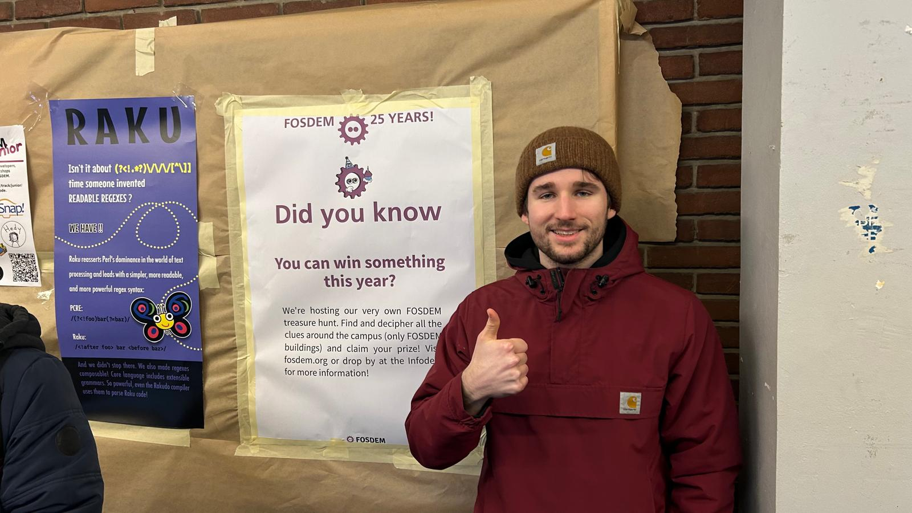

Le FOSDEM (Free and Open Source Software Developers' European Meeting) est l'une des plus grandes conférences européennes dédiées aux logiciels libres et open source. Elle se tient chaque année début février sur le campus de l'ULB à Bruxelles et rassemble des milliers de développeurs, d'entreprises et de passionnés du monde entier.
La conférence m'a permis de découvrir un très grand nombre d'entreprise et projets que je ne connaissais pas (OpenFoodFacts et Chamilo par exemple) La conférence m'a exposé à un écosystème très large que je ne connaissais qu'en surface. J'ai eu l'occasion d'assisté à des présentations sur l'histoire de l'informatique et les enjeux du logiciel libre aujourd'hui. En plus d'autres présentations intéréssante.
Le FOSDEM m'a ouvert les yeux sur l'ampleur et la vitalité de la communauté open source. Dans le domaine du réseau et des infrastructures, une grande partie des outils que j'utilise ou que j'utiliserai sont open source : Linux, pfSense, Wireshark, OpenVPN, Ansible… Lors de cette convention j'ai pris goût au projet open source, tellement que mon TFE à comme but d'être totalement open source et transparant.
Cette visite m'a aussi rappelé l'importance de rester curieux et de se tenir informé des évolutions technologiques, même dans des domaines qui ne sont pas directement les miens. Les barrières entre les différents domaines de l'informatiques deviennent de plus en plus flou, ce qui rend essentiel le fait de s'intéresser à d'autres domaines que le miens.
